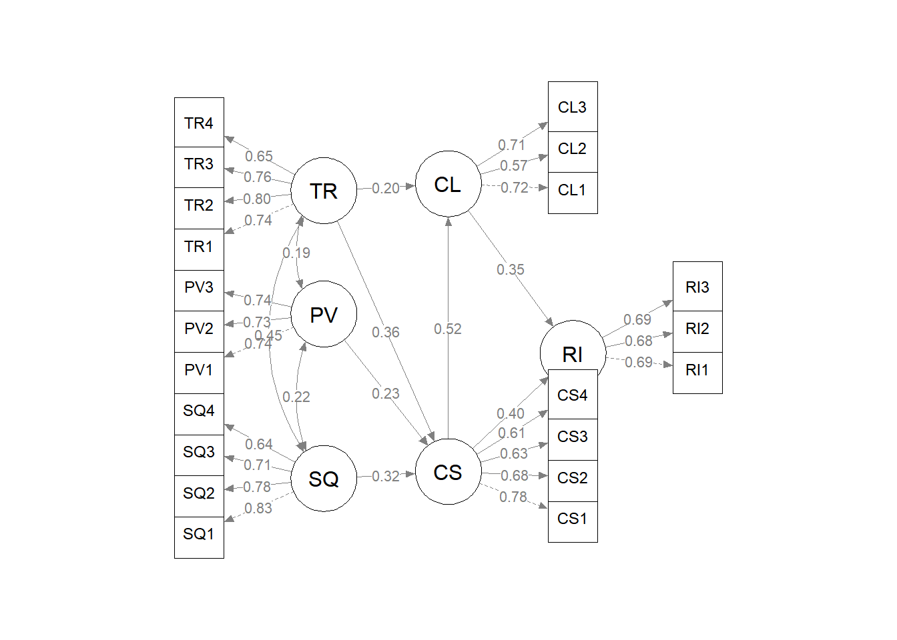

library(lavaan)
library(semPlot)
library(tidyverse)Sesi 3: Structural Equation Modelling (SEM)
ISEI Workshop: Analisis Regresi & SEM dengan RStudio
Bagian A: CB-SEM dengan lavaan
1. Persiapan
2. Import Data
ecom <- read_csv("data/sem_ecommerce.csv")
glimpse(ecom)Rows: 300
Columns: 26
$ id <dbl> 1, 2, 3, 4, 5, 6, 7, 8, 9, 10, 11, 12, 13, 14, 15, 16, 17, 1…
$ gender <chr> "Perempuan", "Laki-laki", "Perempuan", "Perempuan", "Laki-la…
$ age <dbl> 50, 25, 48, 21, 43, 25, 39, 30, 54, 55, 46, 22, 46, 20, 32, …
$ education <chr> "S2", "S1", "S2", "SMA", "D3", "S1", "S2", "SMA", "S2", "S1"…
$ income <chr> "6-10 juta", "> 10 juta", "< 3 juta", "3-6 juta", "6-10 juta…
$ SQ1 <dbl> 5, 2, 4, 4, 3, 1, 3, 3, 4, 4, 3, 3, 4, 4, 1, 5, 5, 4, 3, 4, …
$ SQ2 <dbl> 4, 3, 4, 5, 3, 2, 3, 3, 4, 4, 4, 4, 5, 4, 2, 4, 5, 4, 4, 6, …
$ SQ3 <dbl> 5, 4, 4, 3, 4, 2, 3, 4, 3, 3, 4, 4, 5, 4, 2, 3, 5, 4, 3, 5, …
$ SQ4 <dbl> 5, 3, 5, 5, 4, 2, 3, 3, 4, 4, 5, 3, 5, 4, 3, 5, 3, 3, 3, 4, …
$ PV1 <dbl> 4, 3, 4, 3, 4, 4, 4, 3, 5, 4, 6, 4, 4, 3, 3, 6, 6, 5, 4, 5, …
$ PV2 <dbl> 5, 5, 5, 3, 4, 3, 6, 3, 4, 3, 5, 4, 3, 2, 4, 6, 5, 4, 3, 3, …
$ PV3 <dbl> 5, 3, 4, 4, 5, 2, 4, 2, 3, 3, 5, 3, 3, 2, 3, 7, 5, 5, 4, 5, …
$ TR1 <dbl> 2, 3, 4, 5, 5, 3, 3, 4, 6, 4, 3, 4, 3, 4, 2, 4, 4, 4, 3, 5, …
$ TR2 <dbl> 5, 3, 3, 5, 3, 2, 5, 4, 5, 3, 2, 4, 3, 5, 2, 4, 3, 4, 3, 4, …
$ TR3 <dbl> 4, 3, 3, 4, 3, 3, 4, 4, 5, 4, 4, 4, 4, 5, 3, 5, 4, 4, 4, 5, …
$ TR4 <dbl> 4, 3, 5, 3, 4, 3, 4, 5, 5, 1, 3, 2, 4, 5, 2, 4, 4, 4, 5, 5, …
$ CS1 <dbl> 5, 3, 4, 3, 4, 2, 4, 4, 3, 3, 4, 4, 4, 4, 2, 5, 2, 4, 4, 5, …
$ CS2 <dbl> 4, 3, 4, 4, 4, 3, 4, 4, 3, 4, 4, 3, 5, 5, 2, 3, 3, 3, 4, 5, …
$ CS3 <dbl> 3, 3, 5, 5, 5, 4, 3, 4, 3, 4, 5, 4, 4, 5, 3, 5, 2, 4, 4, 5, …
$ CS4 <dbl> 4, 3, 3, 6, 4, 2, 4, 4, 3, 3, 5, 3, 4, 5, 3, 5, 3, 4, 4, 4, …
$ CL1 <dbl> 5, 5, 4, 4, 5, 3, 5, 4, 3, 3, 6, 3, 5, 5, 2, 4, 2, 4, 4, 4, …
$ CL2 <dbl> 4, 4, 4, 4, 4, 2, 4, 5, 3, 4, 4, 3, 5, 5, 3, 4, 3, 3, 4, 4, …
$ CL3 <dbl> 4, 4, 3, 4, 5, 2, 5, 5, 3, 4, 5, 1, 5, 5, 5, 4, 4, 3, 3, 5, …
$ RI1 <dbl> 4, 4, 3, 3, 4, 4, 4, 5, 3, 3, 5, 3, 5, 6, 3, 5, 2, 4, 4, 4, …
$ RI2 <dbl> 3, 4, 4, 4, 5, 3, 4, 5, 2, 2, 6, 3, 5, 4, 3, 4, 2, 3, 4, 6, …
$ RI3 <dbl> 4, 4, 3, 5, 4, 2, 3, 5, 2, 2, 6, 3, 4, 5, 3, 4, 4, 3, 4, 6, …3. CFA (Confirmatory Factor Analysis)
cfa_model <- '
SQ =~ SQ1 + SQ2 + SQ3 + SQ4
PV =~ PV1 + PV2 + PV3
TR =~ TR1 + TR2 + TR3 + TR4
CS =~ CS1 + CS2 + CS3 + CS4
CL =~ CL1 + CL2 + CL3
RI =~ RI1 + RI2 + RI3
'
cfa_fit <- cfa(cfa_model, data = ecom)
fitMeasures(cfa_fit, c("chisq", "df", "pvalue", "cfi", "tli", "rmsea", "srmr")) chisq df pvalue cfi tli rmsea srmr
149.543 174.000 0.910 1.000 1.014 0.000 0.035 Standardized Loadings
parameterEstimates(cfa_fit, standardized = TRUE) |>
filter(op == "=~") |>
select(konstruk = lhs, indikator = rhs, loading = est, std_loading = std.all, p = pvalue) konstruk indikator loading std_loading p
1 SQ SQ1 1.000 0.834 NA
2 SQ SQ2 0.859 0.779 0
3 SQ SQ3 0.783 0.709 0
4 SQ SQ4 0.718 0.635 0
5 PV PV1 1.000 0.740 NA
6 PV PV2 1.041 0.727 0
7 PV PV3 1.086 0.744 0
8 TR TR1 1.000 0.738 NA
9 TR TR2 1.098 0.799 0
10 TR TR3 1.053 0.760 0
11 TR TR4 0.922 0.652 0
12 CS CS1 1.000 0.774 NA
13 CS CS2 0.877 0.679 0
14 CS CS3 0.877 0.631 0
15 CS CS4 0.781 0.604 0
16 CL CL1 1.000 0.726 NA
17 CL CL2 0.827 0.565 0
18 CL CL3 1.114 0.708 0
19 RI RI1 1.000 0.688 NA
20 RI RI2 1.080 0.682 0
21 RI RI3 1.092 0.691 0CR & AVE
std_load <- parameterEstimates(cfa_fit, standardized = TRUE) |>
filter(op == "=~") |>
select(konstruk = lhs, loading = std.all)
std_load |>
summarize(
n_items = n(),
AVE = mean(loading^2),
CR = sum(loading)^2 / (sum(loading)^2 + sum(1 - loading^2)),
.by = konstruk
) konstruk n_items AVE CR
1 SQ 4 0.5525085 0.8301907
2 PV 3 0.5429089 0.7808402
3 TR 4 0.5465686 0.8274624
4 CS 4 0.4557069 0.7684247
5 CL 3 0.4489746 0.7072876
6 RI 3 0.4720857 0.72845734. Full SEM
sem_model <- '
SQ =~ SQ1 + SQ2 + SQ3 + SQ4
PV =~ PV1 + PV2 + PV3
TR =~ TR1 + TR2 + TR3 + TR4
CS =~ CS1 + CS2 + CS3 + CS4
CL =~ CL1 + CL2 + CL3
RI =~ RI1 + RI2 + RI3
CS ~ SQ + PV + TR
CL ~ CS + TR
RI ~ CS + CL
'
sem_fit <- sem(sem_model, data = ecom)
fitMeasures(sem_fit, c("chisq", "df", "pvalue", "cfi", "tli", "rmsea", "srmr")) chisq df pvalue cfi tli rmsea srmr
152.229 179.000 0.927 1.000 1.015 0.000 0.036 Path Coefficients
parameterEstimates(sem_fit, standardized = TRUE) |>
filter(op == "~") |>
select(DV = lhs, IV = rhs, B = est, SE = se, Z = z, p = pvalue, Beta = std.all) |>
mutate(Sig = ifelse(p < 0.05, "Ya", "Tidak")) DV IV B SE Z p Beta Sig
1 CS SQ 0.257 0.057 4.505 0.000 0.320 Ya
2 CS PV 0.238 0.066 3.595 0.000 0.234 Ya
3 CS TR 0.337 0.068 4.920 0.000 0.359 Ya
4 CL CS 0.466 0.084 5.579 0.000 0.522 Ya
5 CL TR 0.170 0.071 2.411 0.016 0.203 Ya
6 RI CS 0.319 0.081 3.929 0.000 0.403 Ya
7 RI CL 0.309 0.094 3.284 0.001 0.349 YaR-squared
lavInspect(sem_fit, "r2") SQ1 SQ2 SQ3 SQ4 PV1 PV2 PV3 TR1 TR2 TR3 TR4 CS1 CS2
0.696 0.607 0.503 0.404 0.548 0.533 0.547 0.545 0.637 0.579 0.425 0.602 0.463
CS3 CS4 CL1 CL2 CL3 RI1 RI2 RI3 CS CL RI
0.398 0.368 0.525 0.322 0.503 0.474 0.466 0.477 0.452 0.430 0.463 Path Diagram
semPaths(sem_fit, whatLabels = "std", layout = "tree2",
edge.label.cex = 0.8, sizeMan = 6, sizeLat = 8,
style = "lisrel", residuals = FALSE, rotation = 2, nCharNodes = 3)
Bagian B: PLS-SEM dengan seminr
5. Persiapan
library(seminr)6. Import Data
inov <- read_csv("data/sem_innovation.csv")
glimpse(inov)Rows: 200
Columns: 22
$ id <dbl> 1, 2, 3, 4, 5, 6, 7, 8, 9, 10, 11, 12, 13, 14, 15, 16, 17, 1…
$ IC1 <dbl> 5, 3, 5, 4, 4, 1, 4, 3, 5, 4, 4, 4, 4, 4, 1, 6, 5, 5, 4, 5, …
$ IC2 <dbl> 4, 5, 5, 3, 4, 7, 4, 4, 5, 7, 4, 6, 4, 4, 4, 6, 5, 6, 6, 7, …
$ IC3 <dbl> 6, 6, 4, 5, 4, 3, 7, 7, 5, 4, 6, 4, 6, 6, 5, 5, 6, 6, 5, 5, …
$ IC4 <dbl> 6, 4, 4, 5, 4, 4, 4, 4, 3, 5, 5, 3, 7, 4, 4, 2, 4, 3, 5, 5, …
$ MO1 <dbl> 3, 4, 4, 4, 6, 5, 6, 5, 5, 7, 4, 5, 7, 5, 7, 3, 5, 4, 3, 4, …
$ MO2 <dbl> 7, 6, 6, 4, 6, 4, 5, 5, 4, 5, 6, 5, 3, 3, 4, 3, 5, 4, 4, 2, …
$ MO3 <dbl> 5, 6, 5, 4, 6, 3, 6, 5, 2, 4, 6, 2, 6, 6, 6, 5, 4, 3, 5, 4, …
$ EO1 <dbl> 7, 2, 3, 6, 6, 4, 3, 3, 6, 2, 4, 5, 4, 5, 7, 4, 5, 4, 5, 4, …
$ EO2 <dbl> 3, 6, 4, 6, 4, 6, 4, 4, 5, 3, 4, 4, 6, 3, 6, 4, 4, 6, 5, 6, …
$ EO3 <dbl> 3, 4, 5, 4, 6, 5, 4, 4, 4, 4, 6, 4, 6, 5, 3, 4, 3, 7, 5, 5, …
$ CA1 <dbl> 4, 4, 4, 4, 3, 4, 4, 3, 4, 4, 4, 4, 4, 4, 5, 4, 3, 5, 3, 4, …
$ CA2 <dbl> 4, 4, 2, 4, 4, 5, 5, 4, 3, 4, 4, 4, 4, 4, 5, 4, 5, 4, 4, 5, …
$ CA3 <dbl> 5, 4, 2, 4, 3, 4, 4, 3, 3, 3, 4, 4, 4, 3, 4, 3, 5, 5, 5, 4, …
$ CA4 <dbl> 3, 4, 5, 3, 4, 5, 5, 2, 4, 3, 4, 2, 4, 5, 5, 3, 5, 4, 3, 4, …
$ FP1 <dbl> 4, 5, 4, 4, 3, 4, 3, 5, 4, 4, 3, 4, 4, 4, 4, 3, 6, 4, 4, 3, …
$ FP2 <dbl> 4, 5, 3, 3, 4, 4, 5, 5, 4, 5, 4, 3, 5, 4, 5, 4, 4, 5, 4, 4, …
$ FP3 <dbl> 5, 4, 4, 3, 5, 4, 4, 4, 4, 5, 3, 4, 5, 5, 4, 4, 4, 5, 3, 3, …
$ FP4 <dbl> 4, 5, 4, 5, 3, 4, 4, 5, 5, 4, 4, 4, 4, 4, 3, 4, 4, 4, 3, 4, …
$ firm_size <chr> "Menengah", "Kecil", "Kecil", "Kecil", "Menengah", "Kecil", …
$ sector <chr> "Manufaktur", "Perdagangan", "Teknologi", "Manufaktur", "Man…
$ firm_age <dbl> 12, 12, 16, 17, 2, 17, 12, 2, 3, 5, 14, 17, 7, 24, 11, 18, 2…7. Spesifikasi & Estimasi Model
mm <- constructs(
composite("IC", multi_items("IC", 1:4), weights = mode_B),
composite("MO", multi_items("MO", 1:3), weights = mode_B),
composite("EO", multi_items("EO", 1:3), weights = mode_B),
composite("CA", multi_items("CA", 1:4), weights = mode_A),
composite("FP", multi_items("FP", 1:4), weights = mode_A)
)
sm <- relationships(
paths(from = c("IC", "MO", "EO"), to = "CA"),
paths(from = c("CA", "IC"), to = "FP")
)
pls_model <- estimate_pls(data = inov,
measurement_model = mm, structural_model = sm)
pls_summary <- summary(pls_model)8. Evaluasi Model Pengukuran
Reliabilitas
pls_summary$reliability alpha rhoC AVE rhoA
IC -0.108 0.524 0.234 1.000
MO 0.180 0.631 0.380 1.000
EO 0.090 0.479 0.342 1.000
CA 0.547 0.742 0.423 0.578
FP 0.493 0.724 0.397 0.498
Alpha, rhoC, and rhoA should exceed 0.7 while AVE should exceed 0.5Loadings
pls_summary$loadings IC MO EO CA FP
IC1 0.208 -0.000 -0.000 0.000 0.000
IC2 0.595 0.000 -0.000 0.000 0.000
IC3 0.463 0.000 -0.000 0.000 0.000
IC4 0.571 0.000 0.000 0.000 0.000
MO1 0.000 0.661 0.000 0.000 0.000
MO2 -0.000 0.371 0.000 0.000 -0.000
MO3 -0.000 0.751 0.000 0.000 0.000
EO1 -0.000 0.000 0.914 0.000 0.000
EO2 -0.000 0.000 0.436 0.000 0.000
EO3 0.000 -0.000 -0.001 -0.000 0.000
CA1 0.000 0.000 0.000 0.644 0.000
CA2 0.000 0.000 0.000 0.784 0.000
CA3 0.000 0.000 0.000 0.609 0.000
CA4 -0.000 0.000 0.000 0.539 0.000
FP1 0.000 0.000 0.000 0.000 0.623
FP2 0.000 0.000 0.000 0.000 0.655
FP3 0.000 0.000 0.000 0.000 0.677
FP4 0.000 0.000 0.000 0.000 0.560Discriminant Validity (HTMT)
pls_summary$validity$htmt IC MO EO CA FP
IC . . . . .
MO 1.300 . . . .
EO 1.395 1.750 . . .
CA 0.581 1.231 0.977 . .
FP 0.720 0.706 0.832 0.566 .9. Bootstrap
set.seed(2026)
boot_model <- bootstrap_model(pls_model, nboot = 1000)
boot_summary <- summary(boot_model)
boot_summary$bootstrapped_paths Original Est. Bootstrap Mean Bootstrap SD T Stat. 2.5% CI 97.5% CI
IC -> CA 0.120 0.135 0.081 1.474 -0.040 0.279
IC -> FP 0.175 0.192 0.101 1.726 -0.040 0.370
MO -> CA 0.364 0.373 0.061 5.996 0.251 0.486
EO -> CA 0.129 0.152 0.070 1.859 0.013 0.283
CA -> FP 0.282 0.291 0.079 3.561 0.123 0.42710. R-squared dan f-squared
pls_summary$paths CA FP
R^2 0.191 0.126
AdjR^2 0.178 0.117
IC 0.120 0.175
MO 0.364 .
EO 0.129 .
CA . 0.282pls_summary$fSquare IC MO EO CA FP
IC 0.000 0.000 0.000 0.017 0.032
MO 0.000 0.000 0.000 0.144 0.000
EO 0.000 0.000 0.000 0.020 0.000
CA 0.000 0.000 0.000 0.000 0.080
FP 0.000 0.000 0.000 0.000 0.000Latihan
Latihan 1: Modifikasi CB-SEM
Hapus path TR -> CL dari model CB-SEM dan bandingkan fit.
Latihan 2: Modifikasi PLS-SEM
Tambahkan MO -> FP dan bandingkan R-squared FP.
Latihan 3: Indirect Effects
Hitung efek tidak langsung IC -> CA -> FP.